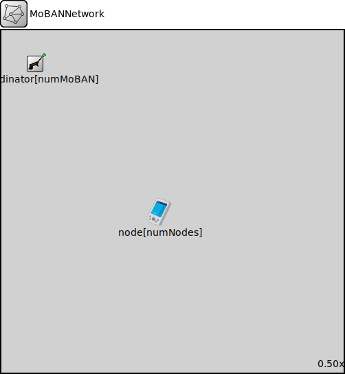

Package: inet.examples.mobility
MoBANNetwork
networkThis network is exactly the same as baseNetwork existing among the examples of MiXiM, but the desired number of MoBAN coordinator modules have been added. Some nodes of type BaseNode use MoBanLocal module as their mobility module. Then those nodes will be considered as WBAN nodes. Those node have a parameter named "coordinatorIndex" that determines to which WBAN (coordinator) the node belongs.
Usage diagram
The following diagram shows usage relationships between types. Unresolved types are missing from the diagram.
Parameters
| Name | Type | Default value | Description |
|---|---|---|---|
| numNodes | int |
total number of nodes in the network, either ordinary nodes or WBAN nodes |
|
| numMoBAN | int |
total number of MoBAN coordinators (WBAN instances) |
Properties
| Name | Value | Description |
|---|---|---|
| isNetwork | ||
| display | bgb=1000,1000 |
Unassigned submodule parameters
| Name | Type | Default value | Description |
|---|---|---|---|
| coordinator.subjectModule | string | "^" |
module path which determines the subject module, the motion of which this mobility model describes, the default value is the parent module |
| coordinator.coordinateSystemModule | string | "" |
module path of the geographic coordinate system module |
| coordinator.displayStringTextFormat | string | "p: %p\nv: %v" |
format string for the mobility module's display string text |
| coordinator.updateDisplayString | bool | true |
enables continuous update of the subject module's position via modifying its display string |
| coordinator.constraintAreaMinX | double | -inf m |
min x position of the constraint area, unconstrained by default (negative infinity) |
| coordinator.constraintAreaMinY | double | -inf m |
min y position of the constraint area, unconstrained by default (negative infinity) |
| coordinator.constraintAreaMinZ | double | -inf m |
min z position of the constraint area, unconstrained by default (negative infinity) |
| coordinator.constraintAreaMaxX | double | inf m |
max x position of the constraint area, unconstrained by default (positive infinity) |
| coordinator.constraintAreaMaxY | double | inf m |
max y position of the constraint area, unconstrained by default (positive infinity) |
| coordinator.constraintAreaMaxZ | double | inf m |
max z position of the constraint area, unconstrained by default (positive infinity) |
| coordinator.updateInterval | double | 0.1s |
the simulation time interval used to regularly signal mobility state changes and update the display |
| coordinator.faceForward | bool | true | |
| coordinator.postureSpecFile | xml |
The input file that includes the specification of all postures |
|
| coordinator.configFile | xml |
The configuration file for setting probability vectors, distributions and correlations |
|
| coordinator.useMobilityPattern | bool |
Set if the logged mobility pattern is used. |
|
| coordinator.mobilityPatternFile | string |
The input file for mobility pattern if it is going to be used. |
Source code
// // This network is exactly the same as baseNetwork existing among the examples of MiXiM, but the desired number of MoBAN coordinator modules have been added. // Some nodes of type BaseNode use MoBanLocal module as their mobility module. Then those nodes will be considered as WBAN nodes. // Those node have a parameter named "coordinatorIndex" that determines to which WBAN (coordinator) the node belongs. // network MoBANNetwork { parameters: int numNodes; // total number of nodes in the network, either ordinary nodes or WBAN nodes int numMoBAN; // total number of MoBAN coordinators (WBAN instances) @display("bgb=1000,1000"); submodules: node[numNodes]: MobileHost { parameters: @display("b=8,8,oval,red,,"); } coordinator[numMoBAN]: MoBanCoordinator { parameters: @display("i=block/wheelbarrow;p=100,100;is=s"); } }File: examples/mobility/MoBANNetwork.ned
 This documentation is released under the Creative Commons license
This documentation is released under the Creative Commons license